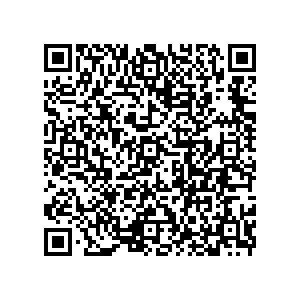

📷 Juega la misión en tu teléfonoKaty termina noveno en noviembre. En el grupo del colegio le dicen dos cosas al mismo tiempo. Una: «estudiá computación, que es el futuro». La otra: «no estudiés eso, la máquina lo va a hacer todo».
Las dos suenan seguras. Ninguna le dice qué hacer. Y lo que decide son tres años de su vida y la matrícula que su familia junta vendiendo pan.
Un oficio es un montón de tareas distintas. Un albañil calcula, mira, levanta y discute con el dueño. La máquina no se lleva oficios: se lleva tareas. Y no se lleva cualquiera.
| La clase de tarea | Qué quiere decir |
|---|---|
| 📄 De papel | Escribir, copiar, sumar, ordenar, buscar. |
| 👁️ De mirar | Mirar algo y decir qué es o qué tiene. |
| ✋ De manos | Hacerlo con el cuerpo, en un sitio. |
| 🧑 De estar con alguien | Convencer, darse cuenta, responder por lo hecho. |
No es magia. Son seis cosas, y las produjiste vos en las etapas anteriores. La letra de la izquierda la vas a usar en la actividad.
| Qué puede hacer | Dónde la produjiste vos, y cómo falla | |
|---|---|---|
| A | 🍎 Ponerle nombre a algo por su parecido con los ejemplos | Etapa 1. Lo hiciste en «Enséñale a la máquina»: le enseñaste frutas y nombró la siguiente. Falla así: se equivoca con lo raro, con lo que no vio. |
| B | 👤 Reconocer una cara comparándola con las que tiene guardadas | Etapa 1. El mismo parecido de la etapa 1, con caras y no frutas. Falla así: confunde a dos personas parecidas. |
| C | 📈 Predecir lo que va a pasar con datos que alguien midió | Etapa 2. Lo mediste en «¿Cuántos ejemplos hacen falta?». Con veinte ya casi siempre acierta. Falla así: no tiene con qué acertar donde nadie midió. |
| D | 💬 Escribir un texto que suena seguro y a veces inventa el dato | Etapa 4. Lo viste en el predictor: lo más probable era «cinco estrofas», y son siete. Falla así: inventa con la misma seguridad con que acierta. |
| E | 🎙️ Fabricar una voz con unos segundos de audio | Etapa 5. Lo armaste en «¿Cuánto hace falta para una estafa?»: las piezas las publicó la familia. Falla así: una voz fabricada pasa por verdadera. |
| F | 🎮 Mejorar a fuerza de intentos, sin que nadie le diga cómo | Etapa 2. Lo viste en el juego del Refuerzo: el suelo se levantó hasta ser una rampa. Falla así: aprende a ganar el juego que le pusiste, no el tuyo. |
Así se desarma un oficio: Agricultor, tarea por tarea. Mirá la última columna. Cada tarea que la máquina se lleva dice con qué.
| La tarea | Clase | ¿Se la lleva? | Por qué | Con qué |
|---|---|---|---|---|
| Llevar la cuenta de lo que se gastó | 📄 De papel | 🤖 Se la lleva | Sumar gastos. Una computadora normal ya lo hacía. | G |
| Decir cuándo sembrar, con el clima medido | 📄 De papel | 🤖 Se la lleva | Con datos de estaciones cercanas acierta. Donde nadie midió, no tiene con qué. | C |
| Mirar la hoja y decir qué plaga es | 👁️ De mirar | 🤖 Se la lleva | Es el detector de plagas que vos entrenaste en la etapa 2. | A |
| Sembrar, limpiar y cosechar | ✋ De manos | 🧑 No puede | Es la ladera, el machete y el sol. Ahí no entra ninguna máquina. | |
| Cargar y acarrear los sacos | ✋ De manos | 🧑 No puede | Cien libras al hombro por un camino que no es camino. | |
| Decidir si vende ahora o espera el precio | 🧑 De estar con alguien | 🤝 A medias | Puede decir cómo va el precio. No sabe si su familia aguanta un mes más. | C |
| Aguantar el año en que se pierde la milpa | 🧑 De estar con alguien | 🧑 No puede | Eso no es una tarea que se delega. Es la vida de una familia. |
Los 8 oficios de esta ficha tienen 51 tareas entre todos. Contadas una por una y repartidas por clase, sale esto:
| La clase de tarea | Cuántas hay | Cuánto se lleva la máquina |
|---|---|---|
| 📄 De papel | 21 tareas | 95 % |
| 👁️ De mirar | 6 tareas | 92 % |
| ✋ De manos | 9 tareas | 6 % |
| 🧑 De estar con alguien | 15 tareas | 13 % |
Y ninguno se salva entero. Mirá cuánto pierde cada uno. Con esta tabla vas a comparar tu actividad:
| El oficio | Quién lo hace | Sobre todo es… | Se lleva |
|---|---|---|---|
| 🏫 Maestra de escuela | la profesora Delmy | 🧑 De estar con alguien | 50 % de 7 |
| 💉 Enfermera del centro de salud | la enfermera Sandra | 🧑 De estar con alguien | 58 % de 6 |
| 🍅 Vendedora del mercado | doña Tere | 🧑 De estar con alguien | 50 % de 6 |
| 🧾 El que lleva las cuentas de la cooperativa | don Beto | 📄 De papel | 64 % de 7 |
| 🗂️ Secretaria de la dirección | la señorita Lesly | 📄 De papel | 75 % de 6 |
| 🧱 Albañil | don Toño | ✋ De manos | 33 % de 6 |
| 🌽 Agricultor | don Chele | ✋ De manos | 50 % de 7 |
| 🚌 Motorista de bus | don Gerardo | ✋ De manos | 58 % de 6 |
Cinco cosas. Tres son malas noticias para el que copia. Dos son buenas para el que estudia.
| Qué cambia | Qué quiere decir, y qué hacés con eso |
|---|---|
| 📝 Copiar dejó de servir, y no por castigo | Si la máquina te la hace, llegás al examen igual que si no la hubieras hecho. La nota de la tarea se la lleva ella. El examen lo hacés vos solo. |
| 🧠 Lo que hay que saberse es lo que sirve para comprobar | Si no sabés que el Himno tiene siete estrofas, no cazás la mentira cuando te diga cinco. Ya te pasó en la etapa 4. Saber poco te deja creyendo todo. |
| 🔁 Te explica mil veces sin cansarse | Es lo mejor que trae. En un aula de 43 nadie puede explicarte cuarenta y tres veces. Pedile que te lo explique otra vez, más fácil. Eso sí te sirve. |
| 🗣️ Lo que va a valer más es sostener lo que decís | Delante de alguien, con una pregunta que no estaba en el papel. Por eso los maestros van a pedir más cosas en voz alta y menos en hoja. |
| ✍️ Lo que entregás lo firmás vos | Si te copia un dato falso, el que lo entregó fuiste vos. La máquina no repite el año. Es la misma regla que en el trabajo de don Beto. |
Hay tareas de clase que la máquina no puede entregar hechas. Llevan una de estas tres cosas:
| El escudo | Qué le pide a la tarea | Por qué para a la máquina |
|---|---|---|
| 👀 Se hace delante de alguien | Hay que explicarlo en voz alta y contestar una pregunta que no estaba. | La máquina te escribe el texto. No se sienta a sostenerlo por vos. |
| 📍 Usa un dato de aquí | Algo de tu casa, tu barrio o tu municipio que no está escrito en ninguna parte. | Solo sabe lo que alguien escribió antes. De tu aldea casi no hay nada escrito. |
| ✋ Pide que midás o hagás algo | Contar, medir, preguntarle a alguien, construir. | No puede ir a tu patio con la cinta métrica. |
Esa frase le costó la matrícula a Marvin en la etapa anterior. Se desarma con cuatro piezas. Un escenario sirve para decidir; una profecía te deja mirando.
| La pieza | La trae cuando… | Le falta cuando… | ¿La trae? |
|---|---|---|---|
| 🔧 Está hecho con algo que YA se puede hacer | Se apoya en una capacidad que existe y que vos produjiste antes. | Se apoya en algo que todavía no se puede hacer. | |
| 🧑 Le pasa a alguien con nombre | Hay una persona concreta, con su nombre. | Le pasa a «la gente», «todos» o «la sociedad». | |
| 💸 Lo que cuesta se puede contar | Se dice en días, en lempiras, en clases o en cosechas. | Dice «es grave», «es peligroso» o «es importante». | |
| 🔀 Termina en una decisión, no en un anuncio | Acaba en una pregunta: ¿qué hago yo si esto pasa? | Acaba contando lo que va a pasar. | |
| ✍️ Probala con una frase que hayas oído vos. Escribila acá y rellená el círculo de cada pieza que traiga: | |||
Elegí UN oficio, el que te gustaría tener, y hacelo entero. En el aula no lo hacen todos con el mismo, y después se comparan.
En cada tarea, rellená el círculo que te parezca: 🤖 se la lleva, 🤝 a medias, 🧑 no puede. Si marcaste una de las dos primeras, escribí con qué. Es la letra de la tabla 3, o una G si eso ya lo hacía una computadora normal.
Las claves, para no volver atrás: A 🍎 Le pone nombre por parecido · B 👤 Reconoce caras · C 📈 Predice con datos medidos · D 💬 Escribe texto, y a veces inventa · E 🎙️ Fabrica una voz · F 🎮 Aprende a fuerza de intentos · G ⚙️ Sumar, ordenar, buscar
| La tarea | Clase | 🤖 | 🤝 | 🧑 | Con qué |
|---|---|---|---|---|---|
| Escribir el examen del bloque | 📄 De papel | ||||
| Calificar exámenes de marcar | 📄 De papel | ||||
| Llenar planillas y sacar promedios | 📄 De papel | ||||
| Mirar un cuaderno y marcar el error | 👁️ De mirar | ||||
| Explicarle otra vez al que no entendió | 🧑 De estar con alguien | ||||
| Darse cuenta de que un niño no desayunó | 🧑 De estar con alguien | ||||
| Responder por la nota que puso | 🧑 De estar con alguien |
| La tarea | Clase | 🤖 | 🤝 | 🧑 | Con qué |
|---|---|---|---|---|---|
| Buscar qué medicina choca con cuál | 📄 De papel | ||||
| Llevar el control de las vacunas | 📄 De papel | ||||
| Mirar una radiografía y marcar lo raro | 👁️ De mirar | ||||
| Ponerle la vía a un niño de tres años | ✋ De manos | ||||
| Decirle a una madre que hay que viajar a Tegucigalpa | 🧑 De estar con alguien | ||||
| Decidir a quién atiende primero | 🧑 De estar con alguien |
| La tarea | Clase | 🤖 | 🤝 | 🧑 | Con qué |
|---|---|---|---|---|---|
| Sacar la cuenta del día | 📄 De papel | ||||
| Saber qué se va a vender más el sábado | 📄 De papel | ||||
| Mirar el tomate y ver cuál ya no aguanta | 👁️ De mirar | ||||
| Cargar, acomodar y limpiar el puesto | ✋ De manos | ||||
| Convencer al que está dudando | 🧑 De estar con alguien | ||||
| Fiarle a la señora de siempre | 🧑 De estar con alguien |
| La tarea | Clase | 🤖 | 🤝 | 🧑 | Con qué |
|---|---|---|---|---|---|
| Sumar las facturas del mes | 📄 De papel | ||||
| Pasar los números a la planilla | 📄 De papel | ||||
| Escribir el informe para la asamblea | 📄 De papel | ||||
| Avisar quién lleva tres meses sin pagar | 📄 De papel | ||||
| Sacar cuánto toca de impuesto | 📄 De papel | ||||
| Decidir si se le fía al que tuvo un mal año | 🧑 De estar con alguien | ||||
| Firmar el informe y responder si está mal | 🧑 De estar con alguien |
| La tarea | Clase | 🤖 | 🤝 | 🧑 | Con qué |
|---|---|---|---|---|---|
| Pasar en limpio lo que se dictó | 📄 De papel | ||||
| Contestar el correo de siempre | 📄 De papel | ||||
| Buscar un expediente en el archivo | 📄 De papel | ||||
| Cuadrar una cita entre tres agendas | 📄 De papel | ||||
| Atender al padre que llega enojado | 🧑 De estar con alguien | ||||
| Saber a quién hay que avisarle primero | 🧑 De estar con alguien |
| La tarea | Clase | 🤖 | 🤝 | 🧑 | Con qué |
|---|---|---|---|---|---|
| Calcular los bloques y la arena | 📄 De papel | ||||
| Mirar la pared y ver que está fuera de plomo | 👁️ De mirar | ||||
| Levantar la pared | ✋ De manos | ||||
| Arreglar lo que se mojó cuando llovió a media obra | ✋ De manos | ||||
| Doblar el hierro a la medida | ✋ De manos | ||||
| Ponerse de acuerdo con el dueño que cambió de idea | 🧑 De estar con alguien |
| La tarea | Clase | 🤖 | 🤝 | 🧑 | Con qué |
|---|---|---|---|---|---|
| Llevar la cuenta de los pasajes | 📄 De papel | ||||
| Decir cuál es la ruta más rápida hoy | 📄 De papel | ||||
| Mirar el camino y ver el hueco | 👁️ De mirar | ||||
| Manejar por la calle de tierra con lluvia | ✋ De manos | ||||
| Arreglar el bus cuando se para en el camino | ✋ De manos | ||||
| Esperar a la señora que viene corriendo | 🧑 De estar con alguien |
Del oficio que elegiste: ¿cuántas tareas se lleva enteras? ¿Cuántas le quedan?
Y la pregunta que de verdad importa: ¿qué tienen en común las que le quedan?
12 tareas de clase. Rellená un círculo en cada una: ¿la puede entregar una máquina, hecha y bien? Si no puede, escribí qué escudo la para.
| La tarea de clase | 🤖 La copia | 🧑 No puede | ¿Qué escudo la para? |
|---|---|---|---|
| Escribí un resumen de la Independencia de Honduras | |||
| Escribí un ensayo sobre la contaminación | |||
| Resolvé estos veinte ejercicios de fracciones | |||
| Copiá la definición de adjetivo | |||
| Hacé la línea del tiempo de los próceres | |||
| Leé este texto y contestá cinco preguntas | |||
| Explicá en voz alta cómo resolviste el problema 5 | |||
| Medí tu patio y sacá su perímetro y su área | |||
| Preguntale a alguien mayor qué se sembraba antes aquí | |||
| Contá los buses que pasan en media hora y hacé la gráfica | |||
| Tomale la lectura un minuto a tu hermano menor | |||
| Escribí qué haría tu familia si se acaba el agua del tanque |
¿Cuántas copia la máquina? ¿Cuántas no?
Escribí una tarea de clase que la máquina no te pueda hacer. Tiene que llevar un escudo. Después rellená el círculo del escudo que la para.
El escudo que la para: 👀 Se hace delante de alguien · 📍 Usa un dato de aquí · ✋ Pide que midás o hagás algo
Por qué no la puede hacer: